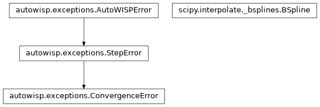

autowisp.iterative_rejection_util module
Class Inheritance Diagram

A collection of general purpose statistical manipulations of scipy arrays.
- autowisp.iterative_rejection_util._estimate_smoothing(knots, fit_x, fit_y, fit_w, spline_args)[source]
Return the smoothing condition the noise about a spline calls for.
A smoothing spline cannot supply this itself: its squared residuals sum to whatever
sit was given. So the noise is instead estimated from a least squares fit with the same knots, which is under no such constraint, asSSR / (m - p)forpcoefficients. The smoothing condition scipy recommends for that noise is then(m - sqrt(2 * m))times it.- Parameters:
knots – The full knot vector of the smoothing fit, as returned by
scipy.interpolate.splrep().fit_x – The points to fit and their weights (or
None).fit_y – The points to fit and their weights (or
None).fit_w – The points to fit and their weights (or
None).spline_args – The remaining arguments of the smoothing fit.
- Returns:
- The smoothing condition, or
Noneif there are no more points than coefficients, leaving no noise to estimate.
- The smoothing condition, or
- Return type:
float or None
- autowisp.iterative_rejection_util.flag_outliers(residuals, threshold)[source]
Flag outlier residuals (see
iterative_rej_linear_leastsq()).
- autowisp.iterative_rejection_util.iterative_rej_linear_leastsq(matrix, rhs, outlier_threshold, max_iterations=inf, return_predicted=False)[source]
Perform linear leasts squares fit iteratively rejecting outliers.
The returned function finds vector x that minimizes the square difference between matrix.dot(x) and rhs, iterating between fitting and rejecting RHS entries which are too far from the fit.
- Parameters:
matrix – The matrix defining the linear least squares problem.
rhs – The RHS of the least squares problem. Non-finite entries are always treated as outliers.
outlier_threshold – The RHS entries are considered outliers if they devite from the fit by more than this values times the root mean square of the fit residuals. Could also be a pair with one positive and one negative entry, in either order, specifying the thresholds above (rhs > matrix * coefficients) and below the fit separately (see
split_threshold()).max_iterations – The maximum number of rejection/re-fitting iterations allowed. Zero for simple fit with no rejections (other than of non-finite RHS entries).
return_predicted – Should the best-fit values for the RHS be returned?
- Returns:
- array:
The best fit coefficients. All NaN, as are the other returned values, if fewer RHS entries survive than there are coefficients to fit.
- float:
The root mean square residual of the latest fit iteration.
- array:
The predicted values for the RHS. Only available if return_predicted ==
True.
- Return type:
(tuple)
- autowisp.iterative_rejection_util.iterative_rej_polynomial_fit(x, y, order, *leastsq_args, **leastsq_kwargs)[source]
Fit for c_i in y = sum(c_i * x^i), iteratively rejecting outliers.
- Parameters:
x – The x (independent variable) in the polynomial.
y – The value predicted by the polynomial (y).
order – The maximum power of x term to include in the polynomial expansion.
leastsq_args – Passed directly to
iterative_rej_linear_leastsq().leastsq_kwargs – Passed directly to
iterative_rej_linear_leastsq().
- Returns:
- autowisp.iterative_rejection_util.iterative_rej_smoothing_spline(x, y, outlier_threshold, max_iterations=inf, **spline_args)[source]
Use scipy’s UnivariateSpline for iterative rejection smoothing.
- Parameters:
x – The x (independent variable) in the dependence.
y – The y (dependenc variable) in the dependence.
outlier_threshold – See same name argument of
iterative_rej_linear_leastsq().max_iterations – See same name argument of
iterative_rej_linear_leastsq().spline_args – Keyword arguments passed directly to
scipy.interpolate.splrep(). If the smoothing conditionsis given (without knotst), it applies to the first fit only, and should be loose enough for the spline not to bend towards the outliers: a value suitable for the clean data would leave nothing to reject. After each round of rejection,sis re-estimated from the noise about a least squares fit with the knots of the latest smoothing fit (see_estimate_smoothing()), and the iterations stop once a round rejects nothing and fails to shrinks. Ifsis not given,scipy.interpolate.splrep()‘s own default applies to every fit, and the iterations stop once nothing is rejected.
- Returns:
The latest iteration of the smoothing spline fit, after either the outlier rejection/refitting iterations have converged or max_iterations was reached.
- Return type:
scipy.interpolate.BSpline
- autowisp.iterative_rejection_util.iterative_rejection_average(array, outlier_threshold, *, average_func=<function nanmedian>, deviation_average=<function nanmean>, max_iter=inf, axis=0, require_convergence=False, mangle_input=False, keepdims=False)[source]
Avarage with iterative rejection of outliers along an axis.
Notes
A more efficient implementation is possible for median.
- Parameters:
array – The array to compute the average of.
outlier_threshold – Outliers are defined as outlier_threshold * (root maen square deviation around the average). Non-finite values are always outliers. This value could also be a 2-tuple with one positive and one negative entry, in either order, specifying the thresholds in the positive and negative directions separately (see
split_threshold()).average_func – A function which returns the average to compute (e.g.
numpy.nanmean()ornumpy.nanmedian()), must ignore nan values.deviation_average – A function or iterable of functions to use for computing the average deviation. If multiple, the first is used for outlier rejection.
max_iter – The maximum number of rejection - re-fitting iterations to perform.
axis – The axis along which to compute the average.
require_convergence – If the maximum number of iterations is reached and still there are entries that should be rejected this argument determines what happens. If True, an exception is raised, if False, the last result is returned as final.
mangle_input – Is this function allowed to mangle the input array.
keepdims – See the keepdims argument of
numpy.mean().
- Returns:
- array(float):
An array with all axes of a other than axis being the same and the dimension along the axis-th axis being 1. Each entry if of average is independently computed from all other entries.
- array(float):
An empirical estimate of the standard deviation around the returned average for each pixel. Calculated as RMS of the difference between individual values and the average divided by one less than the number of pixels contributing to that particular pixel’s average. Has the same shape as above.
- array(int):
The number of non-rejected non-NaN values included in the average of each pixel. Same shape as above.
- Return type:
(tuple)
- autowisp.iterative_rejection_util.split_threshold(threshold)[source]
Return the upper and lower outlier thresholds a user specified.
- Parameters:
threshold – Either a single positive value, applying in both directions, or a pair with one positive and one negative entry, in either order, applying above and below respectively.
- Returns:
- The upper threshold (positive) and the lower one
(negative).
- Return type:
- Raises:
ValueError – If a pair does not have entries of opposite signs, or more than two values are given.